AlChE 전국 경시대회 문제: DBP와 MBP
가소제인 dibutyl phthalate(DBP)는 N-부탄올과 monobutyl phthalate(mbp)를 반응시켜 생산하며 이는 1200만 lb/yr의 잠재시장을 가지고 있다. 반응은 기초속도법칙을 따르며 촉매로는 H2SO4를 사용한다.
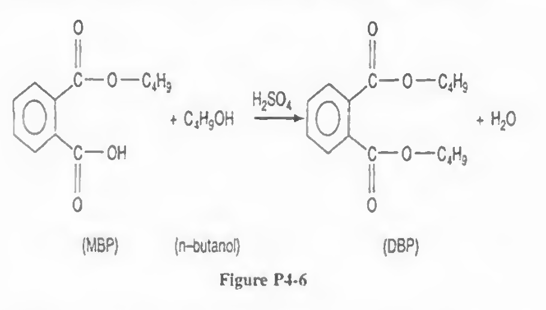
반응기에 들어가는 흐름에서 MBP농도는 0.2lbmol/ft^3이고 부탄올의 몰 유량은 5배이다. 100F에서 비반응속도는 1.2ft^3/lbmol hr이다. 이 프로젝트를 1년에 30일 동안 수행할 수 있는 크기가 1000gal인 CSTR과 관련 주변장치들이 있다(24h/day 운전)
a)예측된 시장의 33%를 생산 (즉 400만 lb/yr)하고자 하는 경우에 1000gal 반응기 출구에서의 전화율을 구하여라.
일단 문제상황 요약을 먼저 시도해보자.
1. A+B -> C + D 이고 목표 생산물은 C이다.
2.속도법칙은 -ra=kCACB
3.A 농도 CA0= 0.2lbmol/ft^3 / CB0= 1 lbmol/ft^3
4. 100F에서 반응하고 k= 1.2ft^3/lbmol hr
5.반응기 크기는 1000gal인 CSTR이고 연간 24시간씩 30일 운전할 수 있다.
6. 1200만 lb/yr가 잠재시장
전화율에 관한 문제는 설계식,속도식, 화학양론을 이용하여 풀어야 한다.
먼저 설계식은 다음과 같다.
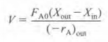
이때 V=1000gal= 약 133.7 ft³이다.
Xin=0이고 Xout은 미지수, FA0= 모름(농도만 주어짐)
DBP 생산하는 반응의 반응속도는 다음과 같다.
-ra=kC(mbp)C(butanol)
이제 화학양론을 써보자. CA CB이므로
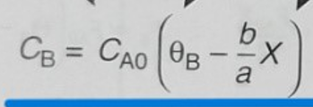
CA=CA0(1-X)
CB=CA0(5-X)
이를 결합하면
-ra=kCA0^2(1-X)(5-X)
설계식에 넣으면
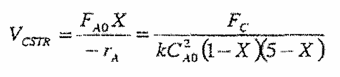
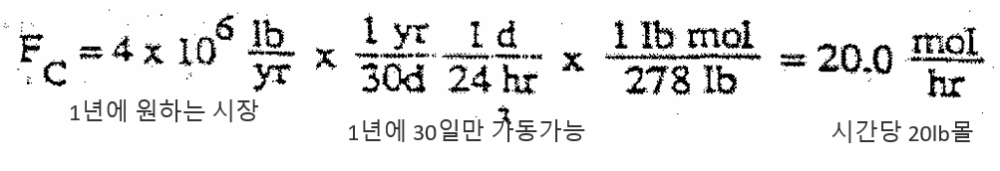
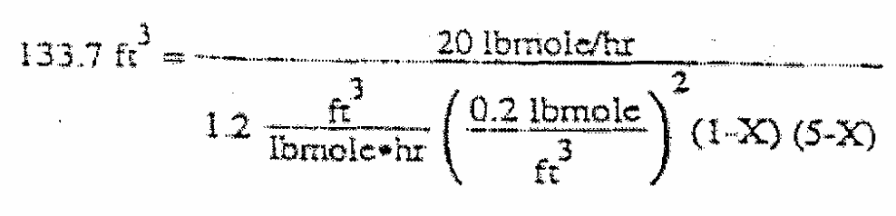 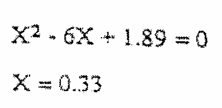
(b) FA0가 동일한 경우에 전화율을 증가시킬 수 있는 방법은? 예컨데 1000gal CSTR하나를 직렬 또는 병렬로 연결한다면 전화율은 얼마가 얻어지는가?
일단 병렬부터 생각해보자. CSTR 병렬 연결시 부피가 2배가 되는 효과가 발생한다.
따라서
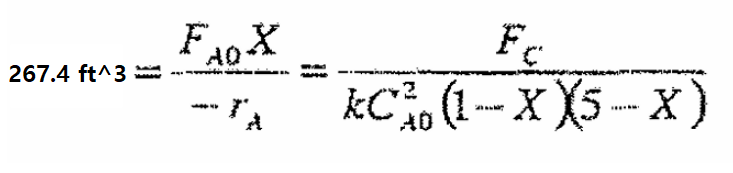
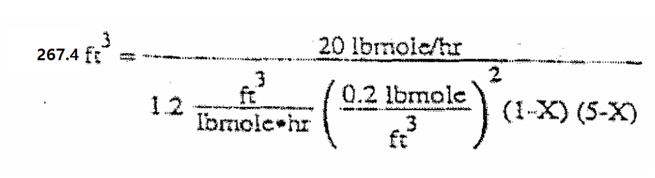
풀면 x=0.642정도 값이 나온다. 거의 전화율이 2배가 되었다고 봐도 되는데, 이는 반응기 부피가 2배가 되었기 때문에 체류시간이 늘어나면서 생기는 결과라고 보면 된다.
이제 직렬연결을 생각해보자.
첫번째 반응기에서
일단 첫번째 반응기에서 나오는 전화율은 위에서 푼 것과 같다.
이제 두 번째 반응기를 생각해보자.
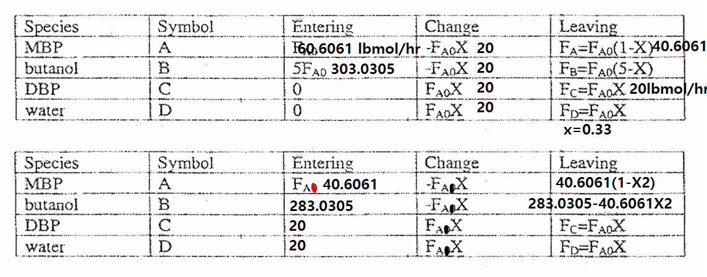 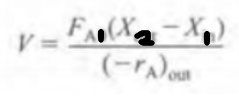
V=1000gal =133.7 ft^3이고 FA1은 첫번째 반응기에서 반응하고 나온 A의 유량이다.
X2는 미지수이고 X1=0.33이다.
속도식은 -ra=kCACB에서
-ra=kCACB=
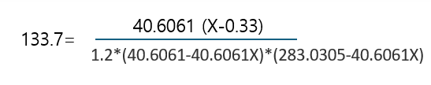
이걸 풀면 두번째 반응기에서 전화율은 0.99가 된다.
따라서 FA0가 동일한 경우에 전화율을 증가시킬 수 있는 방법은?에 대한 답변은 반응기를 추가로 연결하는 것이다.
(C) 항 (a)와 온도가 동일하고 MBP의 몰 유량이 1lbmol/min인 경우에 85%의 전화율을 얻는데 필요한 cstr의 부피는 얼마인가?
1. A+B -> C + D 이고 목표 생산물은 C이다.
2.속도법칙은 -ra=kCACB
3.
4. 100F에서 반응하고 k= 1.2ft^3/lbmol hr
5.반응기 크기는 1000gal인 CSTR이고 연간 24시간씩 30일 운전할 수 있다.
6. 1200만 lb/yr가 잠재시장
일단 조건이 이렇게 수정되었다.
식을 세워보면
여기까진 동일하겠지?
이제 식을 대입해본다.
FA0=
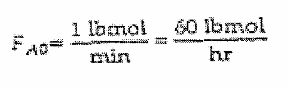
위에서는 농도만 주고 부피유량을 주지 않아 몰 유량을 임의로 잠재시장의 기준치로 정하였는데 이번엔 몰 유량을 주었다. 대입해보자.
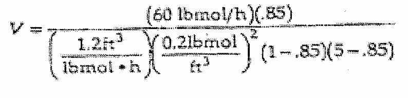
=1706.827 ft^3